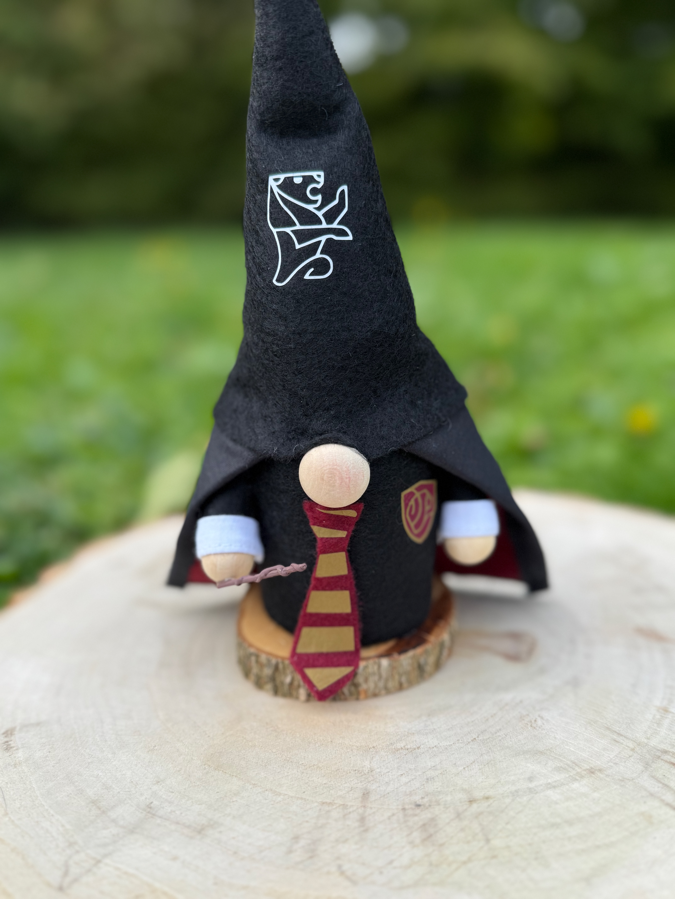
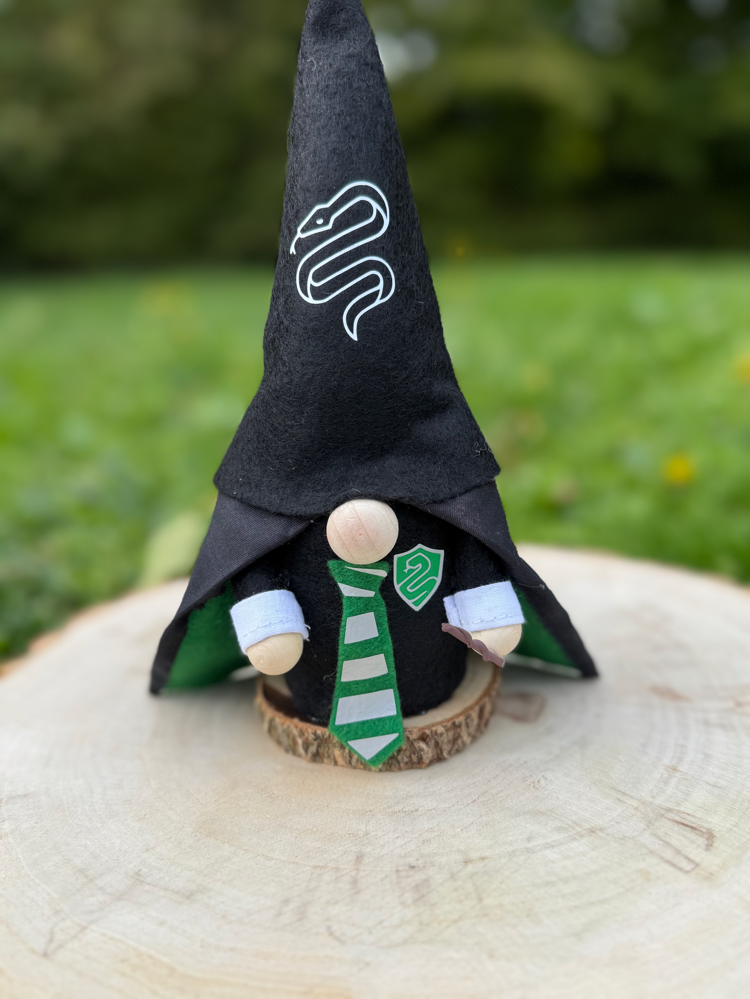
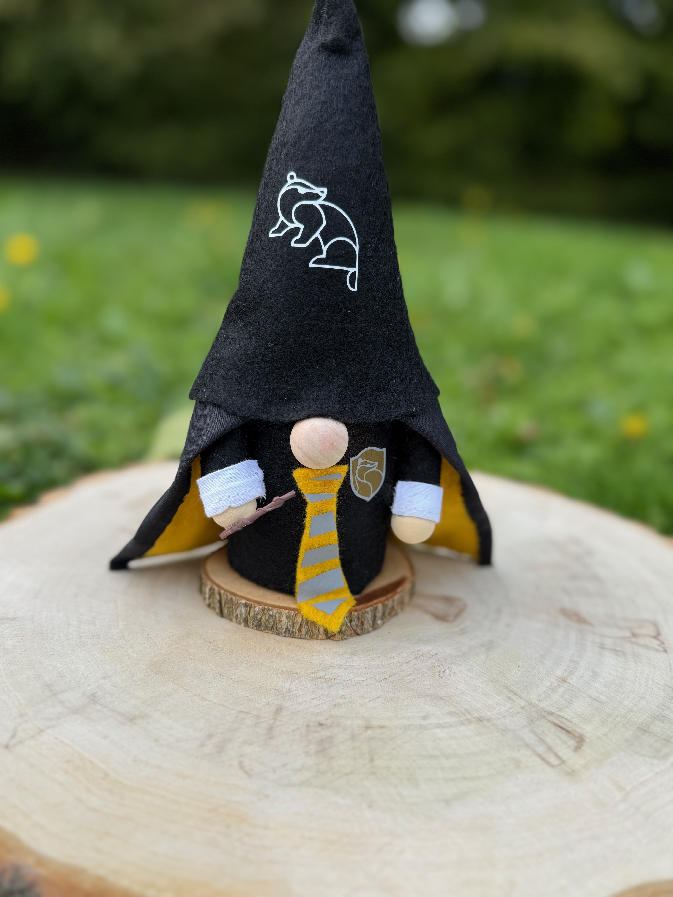
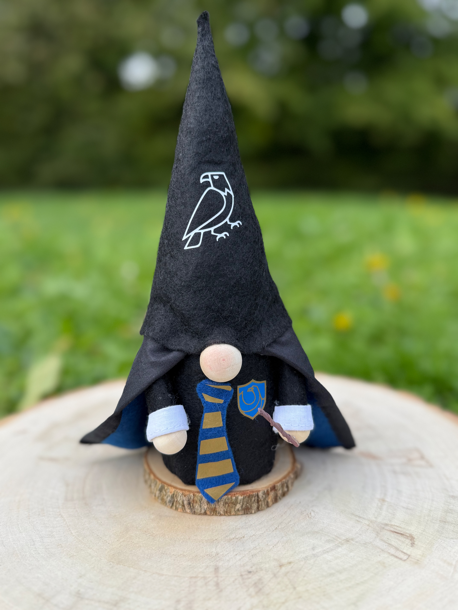
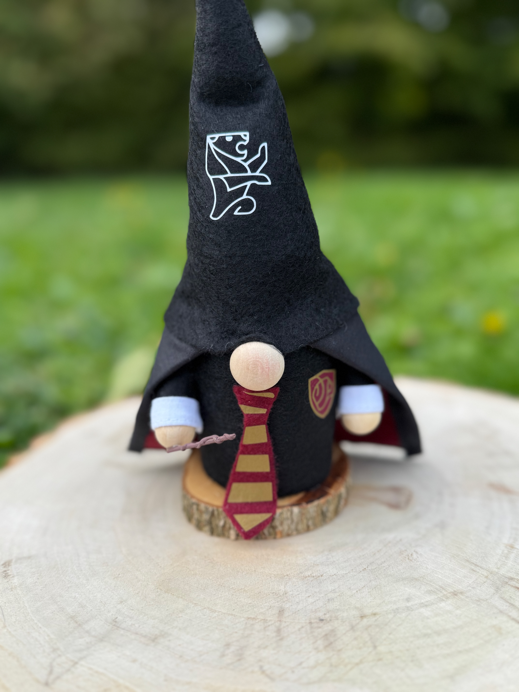
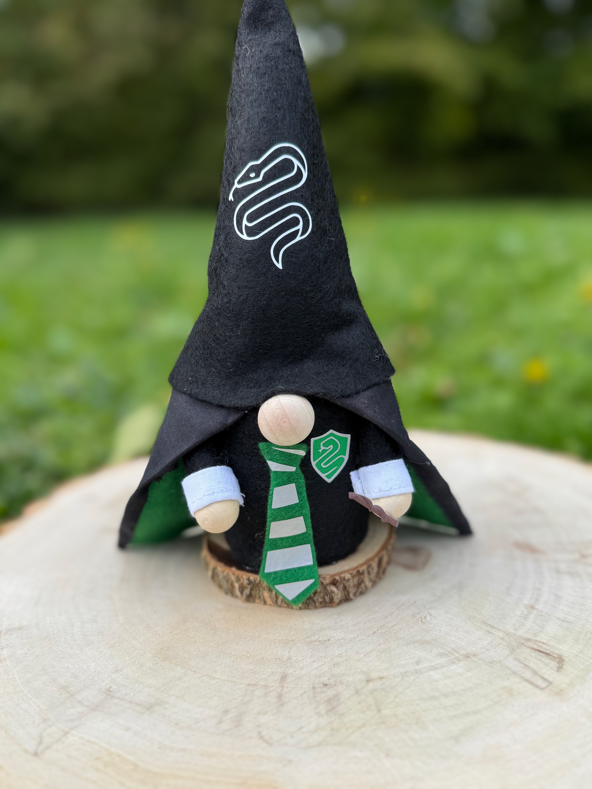
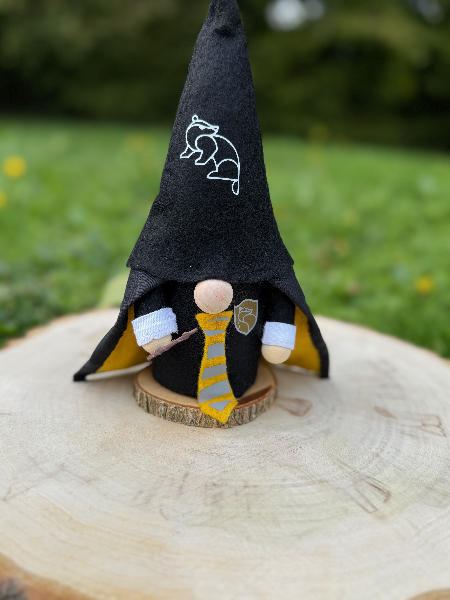
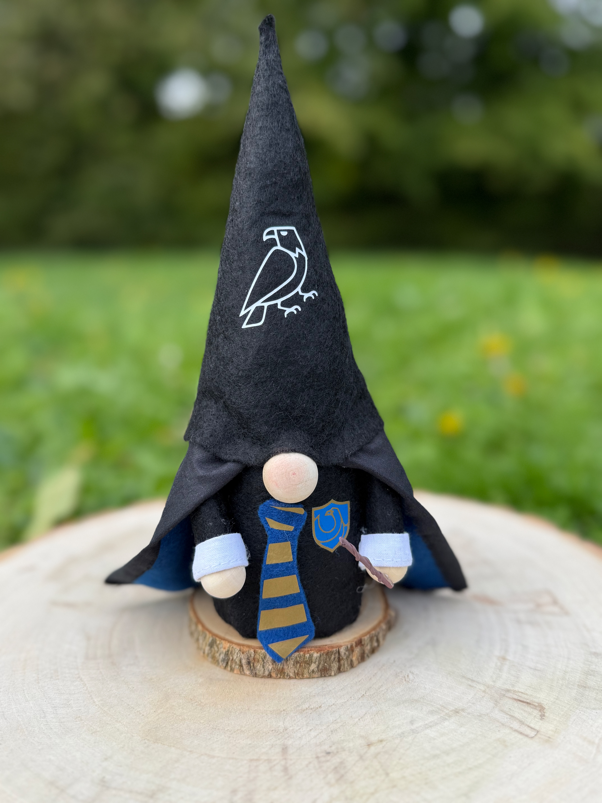

Plongez dans l’univers magique de Harry Potter avec cette collection de gnomes artisanaux inspirés des 4 maisons de Poudlard. Chaque gnome incarne l’esprit, les couleurs et la personnalité de sa maison.
 








🪄 Cette collection de gnomes Harry Potter rend hommage aux quatre maisons mythiques de Poudlard : Gryffondor, Serpentard, Poufsouffle et Serdaigle.
Chaque gnome décoratif fait main est conçu avec des couleurs, des détails et une ambiance propres à sa maison, afin de refléter ses valeurs : courage, ambition, loyauté ou sagesse.
Parfaits pour une décoration Harry Potter, une chambre d’enfant, une étagère de collection ou comme cadeau magique pour les fans de la saga.
✨ Chaque gnome est une création artisanale unique, fabriquée en France avec passion et minutie.
📦 Livraison via Mondial Relay – point relais choisi ensemble après la commande.
25,00 € / gnome
Commander sur EtsyChoisissez une maison, un personnage ou un univers, je crée votre gnome personnalisé fait main.
Créer mon gnome personnalisé